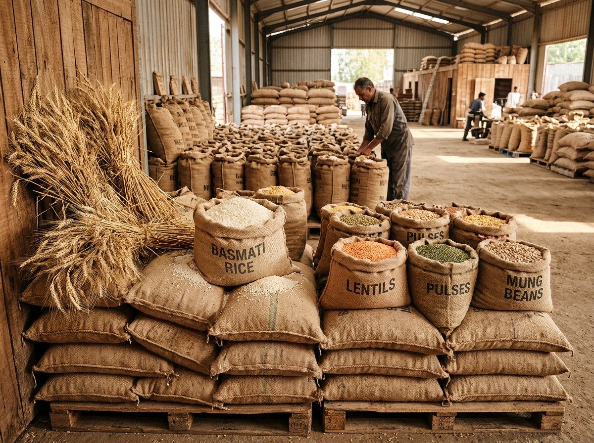

Fresh Vegetables
Discover agricultural produce from farms.
Discover agricultural produce, explore market prices, and connect farmers with buyers through a transparent digital marketplace.

Discover diverse agricultural commodities sourced straight from farmgates across the nation.
Discover agricultural produce from farms.

Explore agricultural commodities.

Connect agricultural production with market opportunities.
FarmerLinkage is a digital agricultural marketplace built to strengthen direct connections between farmers and commercial buyers. By removing intermediaries and providing transparent price discovery, we facilitate fair trade agreements, reliable transactions, and improved farmgate net realizations.
Streamlined processes for agricultural producers and commercial buyers.
Stay informed with daily mandi arrival prices across state APMCs, helping you make data-driven selling and sourcing decisions.